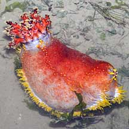
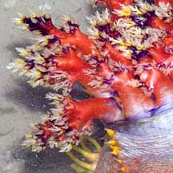
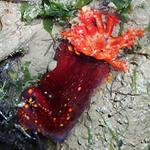
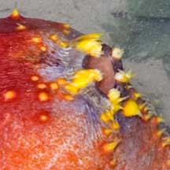
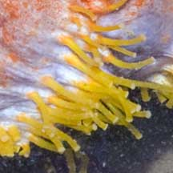
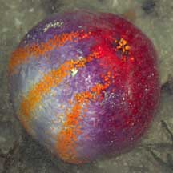

|
|
| sea cucumbers text index | photo index |
| Phylum Echinodermata > Class Holothuroidea |
| Sea
apple sea cucumber Pseudocolochirus violaceus Family Cucumariidae updated Apr 2020 Where seen? This amazing technicolour sea cucumber is sometimes seen on our Northern shores, among seagrasses or attached to rubble. Features: 10-20cm long. Body long or spherical with five rows of tube feet that are bright yellow long slender, but the two rows on the upper side of the body are usually less distinct. Body usually red on the upperside, shading to lilac and white to the underside. The mouth is ringed with blue. Feeding tentacles red, branched tips may be tinged purple, yellow and white. During low tide, it retracts its colourful feeding tentacles. Anus is surrounded by five tiny teeth-like structures that are bright yellow. When relaxed, the normal shape is short and sausage-like as with most other sea cucumbers. When stressed, however, it may inflate itself into a large round ball. |
 Changi, May 10 |
 Colourful feeding tentacles. |
 Small one. Changi, Jun 19 |
|
 Backside. |
 Yellow tube feet. |
 Inflated. Chek Jawa, May 02 |
| Human uses: These beautiful sea
cucumbers unfortunately are harvested for the aquarium trade. Ironically,
they do not make good aquarium specimens as they are often toxic to
their tank mates. Status and threats: This sea cucumber is listed as 'Vulnerable' on the Red List of threatened animals of Singapore. |
| Sea apple sea cucumbers on Singapore shores |
On wildsingapore
flickr
|
| Other sightings on Singapore shores |
Links
|